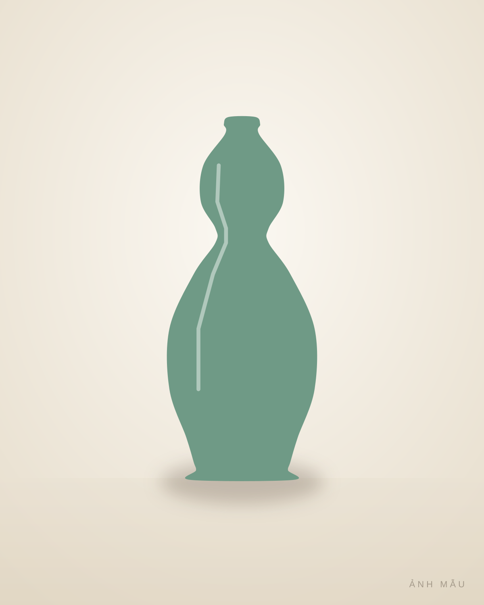
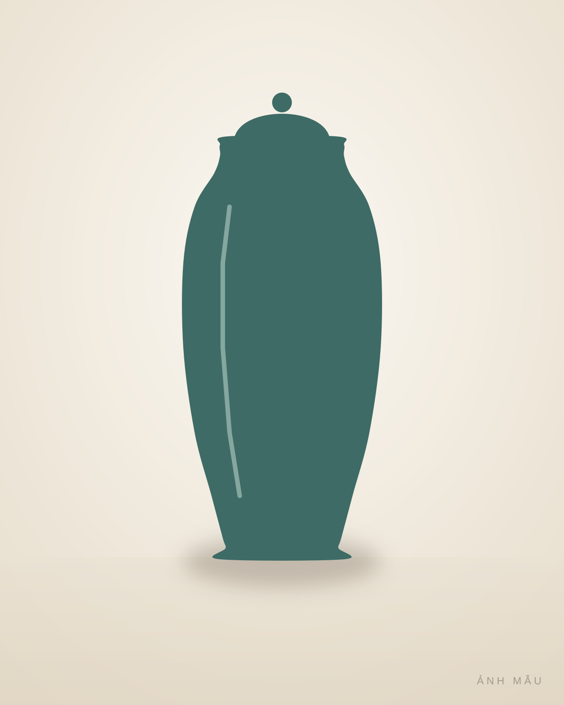
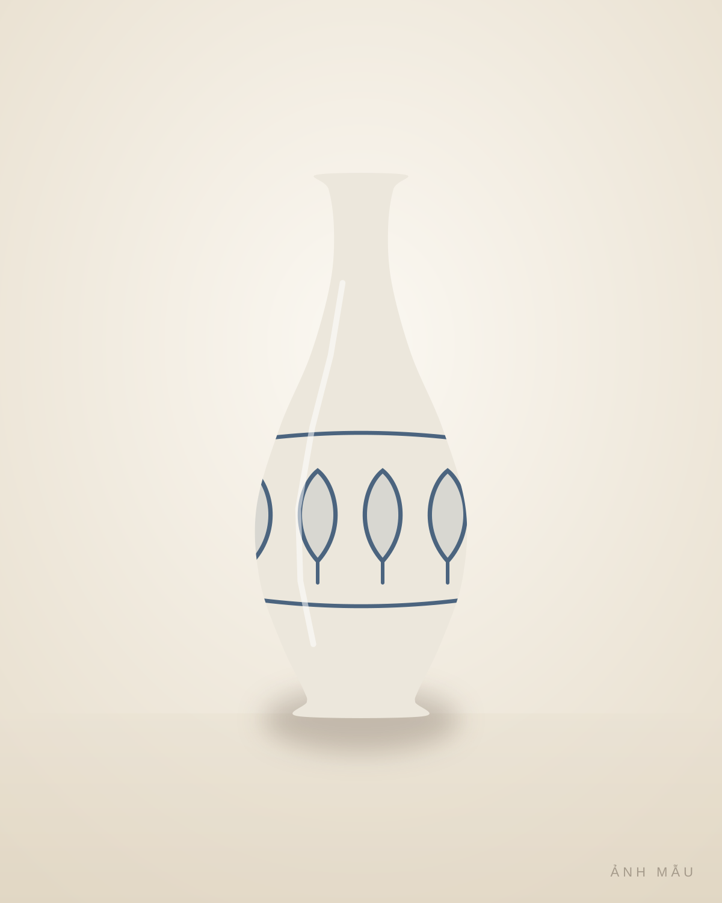

Bộ sưu tập
Các món đang có
7 món. Mỗi món một chiếc, có hồ sơ riêng.

GT-0198
Vò men nâu vẽ lá
Gốm Bát Tràng
2.600.000 đ
GT-0106
Bình men rạn vẽ trúc
Gốm Bát Tràng · khoảng thập niên 1970
2.900.000 đ
GT-0107
Hũ men lam vẽ cá
Gốm Lái Thiêu · khoảng thập niên 1980
650.000 đĐang giữ

GT-0103
Bình hồ lô men ngọc
Gốm Bát Tràng · khoảng thập niên 1980
950.000 đ
GT-0104
Chóe lớn men xanh đồng đắp nổi
Gốm Biên Hòa · khoảng thập niên 1960
Hỏi giá
GT-0101
Bình tỳ bà men lam vẽ hoa sen
Gốm Biên Hòa · khoảng thập niên 1960
2.400.000 đ
GT-0102
Chóe có nắp men da lươn
Gốm Phù Lãng · khoảng thập niên 1970
1.800.000 đ